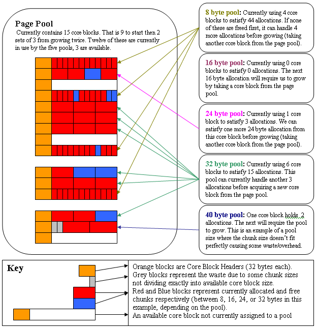

SmallBlockAllocator is a candidate alternative or replacement for SmallObjectAllocator. Don't worry; there's nothing wrong with SmallObjectAllocator. However, SmallBlockAllocator offers a slightly different approach which you might find works better for you. Feel free to try out this SmallBlockAllocator.
Overview
Features
Differences from CMemPoolMgr
Details
Is this allocator for you?
Tuning advice
Example Usage
SmallBlockAllocator implements a zero external fragmentation memory heap designed as a general solution for the fragmentation issues caused by the thousands of small allocations in many of our games. It is very fast compared to general allocators. In terms of memory efficiency it is fantastic for small allocations but memory usage efficiency goes down as allocation size goes up. To control this, the maximum allocation size that will be handled by a SmallBlockAllocator is user configurable … thus the user can choose the balance between eliminating external fragmentation and memory usage efficiency for larger allocations.
This technology (originally called CMemPoolMgr) was developed for Superman and used on PS2, XBox, and X360. CMemPoolMgr was subsequently used on PS3 and X360 by Tiger, NASCAR, and NFL Tour to remedy various fragmentation issues. Details on differences between SmallBlockAllocator and the original CMemPoolMgr are detailed below. More recently it has shipped in Gen 4 Madden, Gen 3 Madden, NCAA Football, and EASports MMA.
Much of the change from CMemPoolMgr is actually cosmetic ... various terms and names have been updated to match conventions and standards existing in the PPMalloc package and everything has moved into the EA::Allocator namespace. These are most of the other changes/additions that have been made:
The system is implemented as a series of memory pools for various allocation sizes which are all funded by another shared memory pool (called the Page Pool). When an individual pool needs more memory it will take a core block from the Page Pool and divide it up into chunks of the appropriate size (for example, if the pool manages 16 byte allocations, it will divide the core block into as many 16 byte chunks as possible). When the Page Pool itself needs memory it will first attempt to reclaim core blocks that are no longer in use from the individual pools (the pool implementation keeps track of free chunks per core block so that un-used core blocks can be relinquished). The system will only request additional memory when all core blocks have been assigned to the individual pools and none are available for re-use … in this case an additional block of core blocks will be requested from a user specified callback.
The diagram below depicts the memory layout of a SmallBlockAllocator after some usage given that the following hypothetical parameters were used to initialize the system (assume those not listed are set to default values):
Variable Value Meaning mnCoreBlockSize 128 Each core block will be 128 bytes. After the 32 byte header, this perfectly fits 12 8 byte allocs, 6 16 byte allocs, 4 24 byte allocs, or 3 32 byte allocs per block. For 40 byte allocs we can fit 2 per core block but there is 16 bytes of waste. mnInitCoreBlockCount 9 We’ll start with 9 core blocks (128 bytes each as specified by mnCoreBlockSize). mnGrowCoreBlockCount 3 If we need more core blocks we’ll allocate 3 at a time. This only comes into play if mnInitCoreBlockCount is not big enough to handle your high water mark. mnMinAlignment 8 All allocations will be at least 8 byte aligned. mnMaxAlignment 16 Allocations which need alignment more than 16 are not supported. mnMaxAllocSize 40 Only handle allocations <=40 bytes. 
See EASmallBlockAllocator.h and the Tuning Advice section below for more details on the available parameters and how to tune them.
This example is somewhat contrived since users will generally want mnCoreBlockSize to be something larger than 128, however it serves to demonstrate how memory usage efficiency decreases as allocation size goes up relative to mnCoreBlockSize. For example, for 32 bytes of overhead (the core block header) we can fit 12 8 byte allocations so the overhead per 8 byte allocation is 32/12 = 2.666 bytes per allocation. However, for 40 byte allocations in this same system our overhead is 24 bytes per allocation! That's (32 (core block header) + 16 (wasted bytes due to 40 bytes not fitting perfectly into core block size)) / 2 (number of 40 byte allocations per core block).
If you actually wanted to store 40 byte allocations you could get much better efficiency by bumping up your mnCoreBlockSize ... at 2048 you can fit 50 40 byte allocations per core block while still having 48 bytes of overhead so you get 0.96 bytes of overhead per 40 byte allocation. However, you also don't want to make your core block size too large ... see 'Tuning Advice' for more details on deciding core block sizes and other considerations.
This allocator is very similar in terms of algorithm employed. However, I've had very favorable results using EASmallBlockAllocator in its place. In one extreme case (involving an SBA handling many thousands of allocations) switching saved us around 2 megs.
I think the key reasons for these gains were:
Allocators with independently tuned pool sizes are harder to maintain because you have to monitor and maintain a set of parameters for each pool size instead of for the whole system. Worse, there is no sharing of pages between pools so any spike in allocations of a particular size will lead to that memory being foever relegated to handling that allocation size. This can lead to extreme internal fragmentation which EASmallBlockAllocator is much less vulnerable to.
SmallBlockAllocator is less memory efficient for allocations of large sizes, therefore you should probably continue to use GeneralAllocator (or PPMalloc or whatever) for large size allocations. SmallBlockAllocator however offers much better memory usage efficiency for small blocks For example, one SmallBlockAllocator in superman that managed >28,000 allocations had an average 1.75 bytes of overhead per allocation (as compared with 4 bytes per alloc for GeneralAllocator). This efficiency is achieved since there is no per chunk overhead (the overhead comes from core block headers and waste that can occur from chunk sizes not dividing evenly into core blocks).
In terms of performance, SmallBlockAllocator is faster (todo: get updated performance metrics from SmallBlockAllocator and GeneralAllocator). With SmallBlockAllocator, allocating is faster and freeing is comparable as long as mnInitCoreBlockCount is large enough to handle your worse-case (freeing may be much faster depending on how the SmallBlockAllocator is configured). Additionally, SmallBlockAllocator does not suffer from performance dips due to fragmentation which may occur in a very fragmented GeneralAllocator heap.
The main benefit of SmallBlockAllocator vs. GeneralAllocator is that SmallBlockAllocator will eliminate external fragmentation issues due to smaller allocations. If you’re having fragmentation problems, consider using SmallBlockAllocator for the small allocations.
Some of our teams have turned to additional heaps as a solution to fragmentation. Examples are creating an STL heap for STL allocations to keep them from fragmenting the main heap. Similar things have been done for Strings. In all cases I’ve examined, switching the problem heap to use SmallBlockAllocator for small allocations has proven a better solution than moving a subset of the allocations into another heap.
Often fixed allocators are created for various individual object types. This may be done for performance, to fix fragmentation, or both. In terms of performance, fixed allocators will always beat SmallBlockAllocator (since they don’t have the overhead required to support shrinking, finding which chunk to free from, etc). If you are using fixed allocators already and performance is a critical factor, keep using them. However, keep in mind that SmallBlockAllocator does perform well compared to GeneralAllocator … so if you’re currently using GeneralAllocator (or some other general allocator) and are looking to address fragmentation (or if you’re using multiple fixed allocators where performance isn’t more important than ease of maintenance) consider these advantages SmallBlockAllocator offers over creating fixed allocators for various object types:
If you’re making a fixed allocator per object type or an array of fixed allocators then you will have to track a high water mark per allocator and maintain the pool sizes for each (or risk having wasted space allocated for various pools that may no longer need it). SmallBlockAllocator is significantly easier to maintain. Using a few parameters you can tune SmallBlockAllocator to handle any set of allocation sizes and alignment requirements. From there you only have one high water mark that you need to maintain (if you want to keep the Page Pool from growing) since all of the individual pools are funded by a single page pool.
If you have (or are considering creating) fixed allocators for each of various object types then you’re looking at using enough memory to handle the worse-case for each of those object types simultaneously. SmallBlockAllocator only needs enough memory to handle the worse case total pages required by the underlying pools (often significantly less than the sum of the worse case for each of the pools). Additionally, the worse case for each pool is dictated by the number of simultaneously outstanding allocations of the size managed by that pool (often significantly less than the sum of the worse case for each object type of a given size).
SmallBlockAllocator offers leak detection (I don’t think any of our fixed allocators have this).
SmallBlockAllocator can track file, line, and allocname per allocation (if provided)
In summary, if absolute fastest performance is an issue, fixed allocators may be a good choice, otherwise consider SmallBlockAllocator.
SmallBlockAllocator offers several memory usage efficiencies that DOGMA does not have:
DOGMA has these advantages over SmallBlockAllocator:
The default parameters should be a good starting point!
The main reasons to tune the params are if you want to increase/decrease the number and sizes of allocations handled by the allocator or you want absolutely maximimze your memory usage efficiency based on your observed usage. The main tools you have are tweaking mnMinAlignment to 4 (to create more pools but have less potential unused space per allocation) and/or tweaking mnCoreBlockSize (to increase or decrease the size of allocations supported and/or the number of allocations per core block). See the HTML based Calculator for quickly validating potential parameters and previewing pool layout based on those parameters. Additionally, the comments in EASmallBlockAllocator.h give important details about each tunable parameter and their ramifications. When tuning always take advantage of the heap reporting functions to see how your changes affect memory usage efficiency and numbers of allocations managed by pools. Some additional things to bear in mind:
Size of CoreBlocks (when an individual pool grows or shrinks it does so one 'CoreBlock' at a time). It must be a multiple of mnMaxAlignment. A reasonable value would be SmallBlockAllocator::CoreBlockOverhead() + N times the max allocation size you want to manage where N is somewhere between 1-4. Larger core block sizes mean more allocations fit per core block (better memory efficiency) but it also means more memory is required to fund a pool, even a pool with a single allocation (wasting the rest of that core block until that alloc is freed or more allocations of that size come in).
In other words, a core block size of 262144 would let you hold 1023 256 byte allocations with the 32 byte header + 224 bytes of waste. That's an overhead of ~0.25 bytes per allocation ((32+224)/1023). That sounds great but if you only make 1 256 byte allocation you're actually reserving that whole 262144 bytes for additional 256 byte allocations that you will never make. Not good. On the other extreme you could make your core block size 512. If you're supporting 256 byte allocations, you'll have 256 bytes of waste per 256 byte allocation ... BAD! That's because you can only fit one 256 byte allocation per 512 core block due to the 32 byte overhead. Pick something big enough that you're comfortable with the per allocation efficiency but not so big that a ton of memory will be wasted by pools that get light usage OR just pick something that fits your large allocation sizes well (for this example, 512+32 is a much better size than 512 because now two 256 byte allocs fit perfectly).
If mnMaxAlignment == mnCoreBlockSize, the Free operation will be much faster (though it should perform reasonably fast even if this isn’t the case). Setting mnMaxAlignment to mnCoreBlockSize may not be an option if your supplied CoreAllocation function cannot handle large alignments because all core block allocations will have to be aligned to mnMaxAlignment. However, if you’re underlying allocator can handle the alignment requirements then setting mnMaxAlignment == mnCoreBlockSize is worthwhile … it lets SmallBlockAllocator use a mask to calculate the location of the core block for a given allocation rather than having to search the core block allocations for the one that contains the core block.
If you want all allocations up to the maximum supported size to be handled just set this option to 0xffff. This option ‘kOptionMaxAllocWaste’ can be used to control how much waste is allowed per allocation. It is recommended that you not try to tune this value unless you know what you are doing and you’re using a memory dump for reference so you can see the before and after affects on efficiency AND number of allocations managed for the heap. Setting this value to 0 means that you’ll have great per allocation memory usage efficiency but you’ll extremely limit which allocations can be handled … only those that fall exactly on a pool size will succeed (i.e., if pool sizes are 16, 32, 48, etc … a 47 byte allocation will fail because it doesn’t fit exactly into the 48 byte pool … it ‘wastes’ more than 0 bytes). This value gives you some control to manually trade-off memory usage efficiency vs number allocations that you don’t have to worry about fragmentation for. It can also be very useful when you’re pooling large allocations … it can allow you to pool very large allocations but only pool those that fall within an acceptable threshold for how well they fit into the available memory chunks.
Using mnCustomPoolSize is not necessarily recommended but it might be useful when you need an allocator to just handle a few well-known sizes. Generally, especially if you have a large number of allocations, just letting the allocator handle picking pool sizes (based on your mnCoreBlockSize) will get excellent results and be easier to maintain.
If setting custom pool sizes and/or mnMaxAllocSize the main thing to keep in mind is, in terms of memory usage, this system is fantastic for small allocations but can become inefficient when working with larger sizes. For example, with a core block size of 3488 bytes you could fit 2 1600 byte allocations per core block and there would be 288 un-used bytes left-over. That’s 144 bytes of overhead per (1600 byte) allocation (terrible). However, for 8 byte allocations in the same system you could fit 432 chunks per core block (432 instead of 436 because of the header) with .074 bytes of overhead per allocation (pretty good).
This is not to say that you should not pool 1600 byte allocations. In fact, those numbers above are from the gameplay heap on Superman PS2 … we actually have an occasional 1600 byte allocation and it does have 144 bytes of overhead (in fact we’re pooling blocks in this heap all the way up to 1720 bytes). However, despite that, the AVERAGE overhead per allocation in this heap came out to 1.75 bytes (better than we were doing with the general allocator). This is because we have >28,000 allocations and 90% of them are smaller allocations (which perform significantly better) … compensating for the overhead of some of the large allocations. This meant we could include these larger allocations in the pooling (to fix fragmentation issues) while still saving memory overhead per allocation (1.75 bytes per alloc beats our general allocator) despite the fact that some allocations have 144 byte overhead.
Once you’ve initially enabled SmallBlockAllocator, if maximizing memory usage efficiency is a goal, you might want to tune your initialization parameters based on data from memory dumps. The SmallBlockAllocator allocates all debug only and metrics tracking type of data using a debug context provided by the user (and all such overhead is excluded from memory dumps). Therefore the data and efficiency seen in dumps from either debug or opt builds should be identical if the same numbers and sizes of allocations are being made in the two types of builds. However, some games have many objects which are different sizes between debug and opt or who make extra debug allocations. If this is the case your usage and efficiency numbers may look different in dumps from the two types of builds. In this case you’ll probably want to tune for efficiency using your opt build and just make sure that your mnInitCoreBlockCount is also sufficient to handle the debug build.
Callbacks that will be used by the examples to alloc & free memory using a general allocator:
void* AllocFunction(SmallBlockAllocator*, size_t nSize, size_t nAlignment, size_t nAlignmentOffset, void* pContext)
{
GeneralAllocator* const pGeneralAllocator = (GeneralAllocator*)pContext;
return pGeneralAllocator->MallocAligned(nSize, nAlignment, nAlignmentOffset);
}
void FreeFunction(SmallBlockAllocator*, void* pCore, void* pContext)
{
GeneralAllocator* const pGeneralAllocator = (GeneralAllocator*)pContext;
pGeneralAllocator->Free(pCore);
}
1. An example of minimum usage of SmallBlockAllocator:
SmallBlockAllocator::Parameters defaultParams;
SmallBlockAllocator sba(&defaultParams, AllocFunction, FreeFunction, pGeneralAllocator, pGeneralAllcoatorDebug);
void* p = sba.Malloc(17);
sba.Free(p);
sba.Shutdown();
2. A common usage is having a wrapper that forwards small allocations to a SmallBlockAllocator and large allocations to the general allocator. This can be very useful for eliminating fragmentation problems occurring in the general allocator without having to modify the client code using the allocator. Here is how the Malloc & Free methods in such a wrapper might be implemented:
void* MyAllocator::Malloc(size_t size, size_t alignment, size_t alignofs)
{
mGeneralAllocator.Lock(true);
void* memPtr(NULL);
//try to satisfy allocations using the small block allocator
if ( mSmallBlockAllocator.IsInitialized() )
{
memPtr = mSmallBlockAllocator.Malloc(size, alignment, alignofs);
}
//if the small block allocator failed to satisfy the request, use the general allocator
//the small block allocator can fail for several reasons ... requested size is greater than
//max pool size, requested alignment is unsupported, alignofs is != 0, or (if kOptionMaxAllocWaste
//was specified) the allocation did not fit well enough into an available chunk size.
if (!memPtr)
{
memPtr = mGeneralAllocator.Malloc(size, alignment, alignofs);
}
mGeneralAllocator.Lock(false);
return memPtr;
}
void MyAllocator::Free(void* ptr)
{
mGeneralAllocator.Lock(true);
if(!mSmallBlockAllocator.IsInitialized() || !mSmallBlockAllocator.FreeSafe(ptr))
{
//if the small block allocator is not initialized or if FreeSafe returned false
//(indicating that the pointer is was not allocated from the SmallBlockAllocator),
//the ptr must have been allocated from the general allocator
mGeneralAllocator.Free(ptr);
}
mGeneralAllocator.Lock(false);
}
3. This example uses mnCustomPoolSize to create a fixed allocator that has pools for allocation sizes 8, 16, 136, 160, and 256. It also uses kOptionMaxAllocWaste=16 to tell the allocator not to satisfy allocations if they're not within 16 bytes of fitting perfectly in one of the available pool sizes. Using mnCustomPoolSize is not necessarily recommended but it might be useful when you need an allocator to just handle a few well-known sizes. Generally, especially if you have a large number of allocations, just letting the allocator handle picking pool sizes will get excellent results and be easier to maintain.
//determine how much free space in each core block will be taken by overhead for managing the core block
uint16_t cbOverhead = static_cast(EA::Allocator::SmallBlockAllocator::CoreBlockOverhead());
//create initialization parameters
EA::Allocator::SmallBlockAllocator::Parameters params(
256*4+cbOverhead, //nCoreBlockSize - each core block is big enough for 4 256 byte allocations + overhead
50, //nInitCoreBlockCount - we'll allocate 50 core blocks up front
6 //nGrowCoreBlockCount - if we consume all 50 core blocks and need more, we'll grow by 6 at a time
);
//specify pool sizes to be used
uint16_t customPoolSizes[] = {8,16,136,160,256,0}; //this tells the system to create pools for these chunk sizes (0 is the list terminator)
params.mnCustomPoolSize = customPoolSizes;
EA::Allocator::SmallBlockAllocator sba(& params, AllocFunction, FreeFunction, pGeneralAllocator, pGeneralAllcoatorDebug);
//don't satisfy allocations for requested sizes that would waste more that 16 bytes due to not fitting perfectly into available pool sizes
sba.SetOption(EA::Allocator::SmallBlockAllocator::kOptionMaxAllocWaste, 16);
void* p;
//this allocation should succeed since 16 is one of our available pool sizes
p = sba.Malloc(16);
EA_ASSERT(NULL != p);
sba.Free(p);
//this allocation should succeed since 240 is within 16 bytes (as specified by kOptionMaxAllocWaste above) of one of our available pool sizes
p = sba.Malloc(240);
EA_ASSERT(NULL != p);
sba.Free(p);
//this allocation should fail since 200 is not within 16 bytes (as specified by kOptionMaxAllocWaste above) of our next available pool size
p = sba.Malloc(200);
EA_ASSERT(NULL == p);
sba.Shutdown();